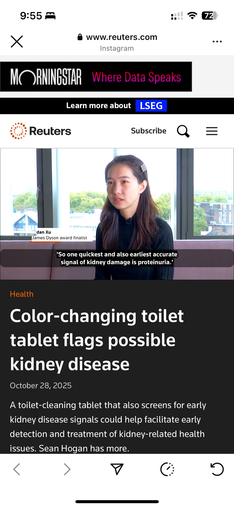

Project overview
Urify is Yidan's current venture, founded and led solo since early 2026 and incubated at Imperial College London's We Innovate programme. It's a simple, low-cost, colour-changing test designed to flag possible early signs of kidney disease from a routine urine check — turning a screening that normally requires a lab visit into something people can do for themselves, early enough to act on.
Kidney disease is often silent until it's advanced. Urify's premise is that catching an early warning sign shouldn't require special equipment or a clinic appointment — it should be as simple and legible as a colour change.
Recognition
Urify was named a national runner-up and UK global top 20 finalist for the James Dyson Award, and was featured by Reuters.

As a solo founder, Yidan owns the product end-to-end — design, research and direction — while the venture is still early and evolving. More detail on Urify is being written up as a full case study; in the meantime, the product itself is live at urify.co.